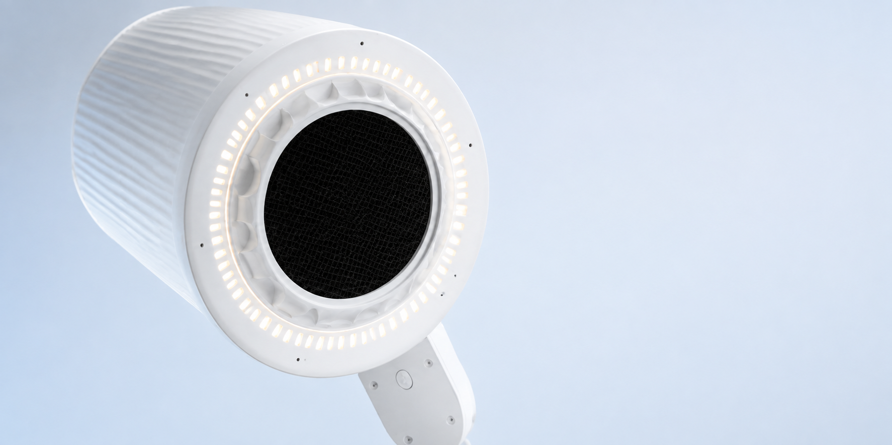
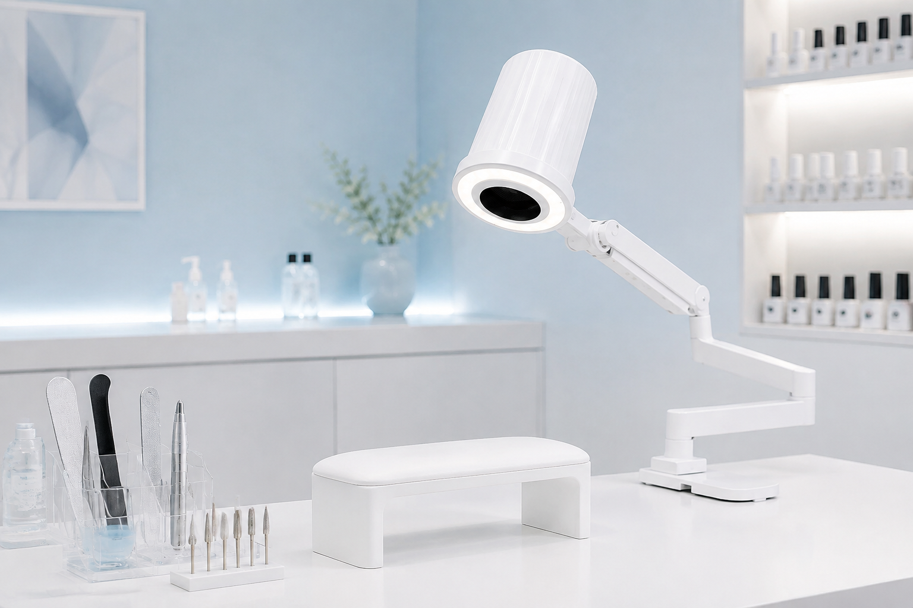

MarkWell MW One
Рабочее пространство,
продуманное до деталей
Свет. Воздух. Контроль.
02 Устройство
Как устроена
MW One
Основные элементы вытяжки объединены в головной части. Фильтр расположен у рабочей зоны и легко снимается для обслуживания.
Фильтр задерживает пыль до того, как воздушный поток достигает двигателя, исключая загрязнение его лопастей и помогая сохранять рабочий ресурс.
Пыль задерживается непосредственно в зоне работы мастера.
Воздух поступает к двигателю после прохождения фильтра.
Фильтр снимается без разборки головной части.

световой контур
фильтр
воздушный поток
03 В работе
Для мастера и клиента
В центре
внимания —
ваша работа.
Точность начинается с рабочего места. Когда свет направлен на детали, а всё необходимое под рукой, можно сосредоточиться на процессе.
04 Пространство
Больше места
для главного.
Свет и локальная вытяжка — в одном устройстве. Рабочий стол остаётся пространством для инструментов, движений и внимания к клиенту.

Видеть каждую деталь
Световой контур окружает рабочую зону.
Работать у источника
Воздухозаборная часть расположена рядом с местом обработки.
Освободить поверхность
Объединённая система вместо отдельных устройств.
05 Подход MarkWell
Свет, чистый воздух
и порядок.
Как единое целое.
Мы создаём профессиональные системы, в которых каждая деталь поддерживает рабочий процесс. От устройства до ощущения пространства — спокойно, точно, продуманно.
06 Система MW One
MarkWell
MW One
Одно устройство.
Продуманное рабочее место.
Световой модуль, локальная вытяжка и регулируемое крепление объединены в одной системе.
- Световой контур
- Съёмный фильтр
- Шарнирное крепление
07 Поддержка
Важное —
по порядку.
Что проверить перед выбором?
Размеры рабочего места, положение рук во время процедуры и возможность установки крепления. Совместимость и комплектацию нужно сверить с документацией выбранной модели.
Как ухаживать за фильтром?
Фильтр требует регулярного обслуживания. Способ очистки и периодичность замены следует уточнять в руководстве MW One — они зависят от типа фильтра и условий работы.
Как подготовить рабочее место?
Освободите место для крепления и проверьте, что устройство не мешает движениям. Установку, подключение и настройку выполняйте по руководству пользователя.